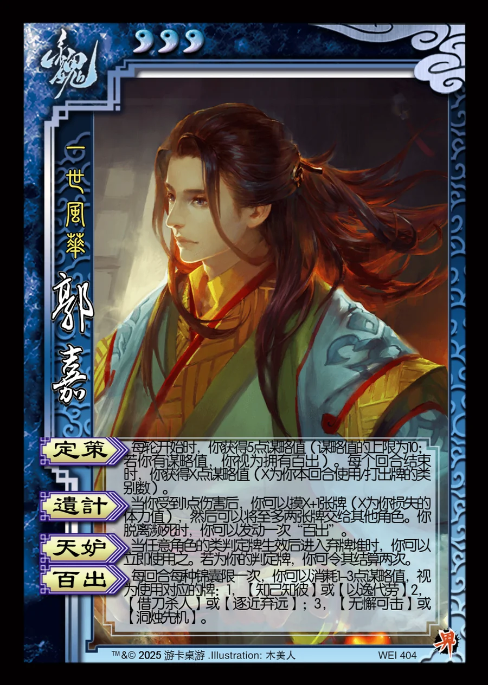

点击卡面查看大图
魏
界郭嘉
♥3一世风华
定策
每轮开始时，你获得5点谋略值（谋略值的上限为10；若你有谋略值，你视为拥有百出）。每个回合结束时，你获得X点谋略值（X为你本回合使用/打出牌的类别数）。
遗计
当你受到1点伤害后，你可以摸X+1张牌（X为你损失的体力值），然后可以将至多两张牌交给其他角色。你脱离濒死时，你可以发动一次“百出”。
天妒
当任意角色的类判定牌生效后进入弃牌堆时，你可以立即使用之。若为你的判定牌，你可令其结算两次。
百出
每回合每种锦囊限一次，你可以消耗1-3点谋略值，视为使用对应的牌：1，【知己知彼】或【以逸代劳】2，【借刀杀人】或【逐近弃远】；3，【无懈可击】或【洞烛先机】。